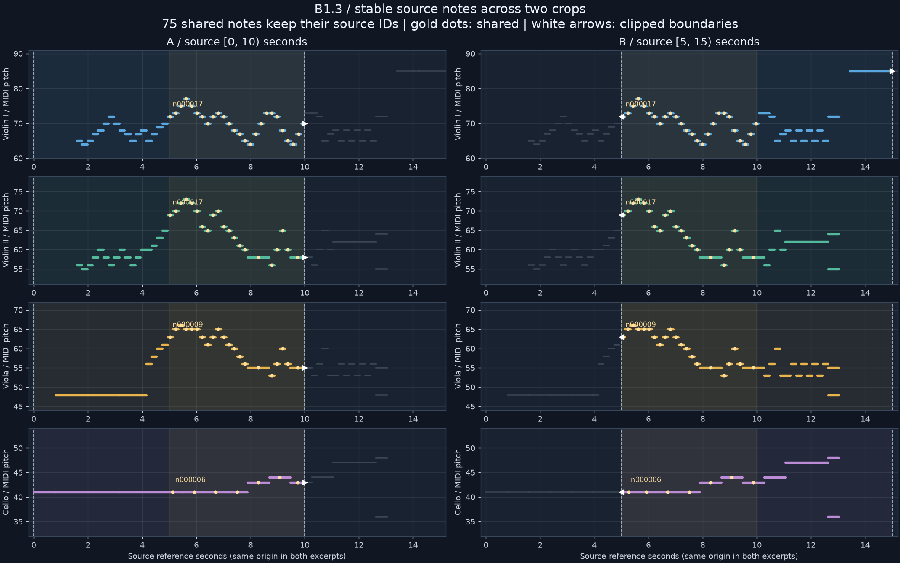

R/R RIBBON ROOM실험 기록 · 이전 결과를 보존한 검토 화면입니다. 새 그래픽 작업은 작업실에서 이어갑니다.
다른 실험 보기
B1.3 · SOURCE NOTE IDENTITY
발췌를 바꿔도 같은 음표를 찾습니다
멘델스존 Op.80 · 악보 기준 15초에서 A(0–10초), B(5–15초)를 비교합니다. 음을 잘라도 원본 음표 ID·음높이·파트는 유지됩니다.
75개두 발췌의 공통 음표
5–10초겹치는 원본 구간
0.3.0선택형 데이터 형식
가로축은 원본 초입니다. 금색 점은 공통 음표, 흰 꺾쇠는 잘린 경계, 회색 선은 원본입니다. 음표를 누르면 두 발췌의 같은 ID를 함께 강조합니다.
Violin I · 공통 26개
음표 목록에서 선택
Violin II · 공통 21개
음표 목록에서 선택
Viola · 공통 21개
음표 목록에서 선택
Cello · 공통 7개
음표 목록에서 선택
원본 음표 ID
로컬 ID는 발췌 안의 순번입니다. 원본 음표 ID를 사용하면 로컬 ID가 달라도 같은 음을 추적할 수 있습니다.전체 파트의 진단 그림

범위와 보존
붙임줄로 연결된 음은 합쳐진 한 이벤트로, 중음의 각 음높이와 반복 발음은 별도 ID로 기록합니다. 반복기호는 펼치지 않고 기보 순서를 따릅니다. 길이가 0인 꾸밈음은 생략하며 실제 연주 시점은 추측하지 않습니다.
같은 원본 파일 내용과 같은 파서 버전에서 발췌를 변경할 때 ID가 유지됩니다. 원본 수정·파서 변경·다른 판본 간의 동일 음표 연결은 이번 범위에 포함하지 않습니다.
기존 0.1.0·0.2.0 결과와 곡 라이브러리는 보존했습니다. 이 화면은 악보 기준 시간의 추적 검사이며 실제 녹음의 발음 정렬 검사는 후속 단계입니다.
전체 기준 JSON · 발췌 A · 발췌 B · ID 비교 · 검증 기록 · 보고서
원본: OpenScore String Quartets · CC0-1.0. 입력 해시와 출처는 각 JSON에 보존했습니다. 시각 품질 사용자 검토는 대기 중입니다.